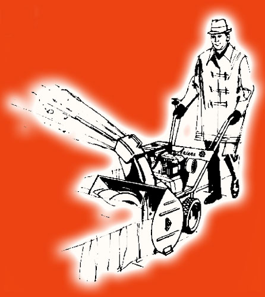

| The
Ariens
1960's and 1970's PROUDLY
MADE
|
| The
Ariens
1960's and 1970's PROUDLY
MADE
|
This educational, non-profit
site is not affiliated with the Ariens Company.
It is simply the "hobby webpage" of
one satisfied 1971 Ariens Sno-Thro owner.
All logos, names and
trademarks are property of their respective
owners.
Official Ariens webpage is
here:
www.ariens.com
Scot Lawrence
Page started January
2009
For information about Ariens parts, see here.
For other general
snowblower questions,
take a look here:
http://www.snowblowerforum.com/
I am a member on that forum, and its a very friendly
and helpful place!
The best place for snowblower discussion on the
internet.
If you have questions, you can find the answers
there..
